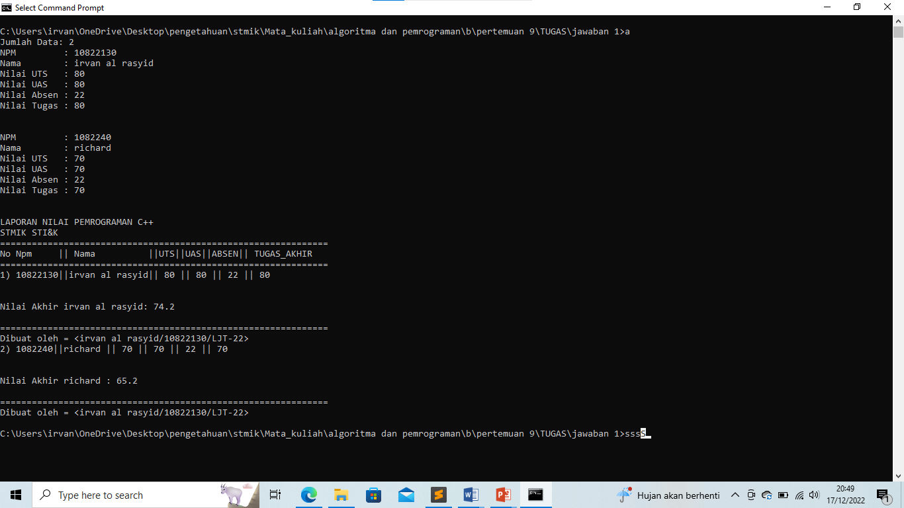

Program c++ memasukan data nilai pada array
Program
#include <iostream> #include <string> using namespace std; const int N = 100; // konstanta untuk jumlah maksimum data //membuat function struct untuk mendata atau memasukan sebuah nilai ke tipe data struct Nilai { string NPM; string nama; float UTS; float UAS; float absen; float tugas; }; int main() { int jumlah_data; cout << "Jumlah Data: "; cin >> jumlah_data; Nilai data[N]; // membuat array of struct for (int i = 0; i < jumlah_data; i++) { cout << "NPM : "; cin >> data[i].NPM; cout << "Nama : "; cin.ignore();getline(cin,data[i].nama); cout << "Nilai UTS : "; cin >> data[i].UTS; cout << "Nilai UAS : "; cin >> data[i].UAS; cout << "Nilai Absen : "; cin >> data[i].absen; cout << "Nilai Tugas : "; cin >> data[i].tugas; cout<<endl<<endl; } cout<<"LAPORAN NILAI PEMROGRAMAN C++\n"; cout<<"STMIK STI&K \n"; cout<<"==============================================================\n"; cout<<"No Npm || Nama ||UTS||UAS||ABSEN|| TUGAS_AKHIR \n"; cout<<"==============================================================\n"; //mengeluarkan hasil // menghitung nilai akhir untuk setiap data for (int i = 0; i < jumlah_data; i++) { float NA = ((0.3 * data[i].UTS) + (0.4 * data[i].UAS) + (0.1 * data[i].absen) + (0.2 * data[i].tugas)); cout<<i+1<<") "<<data[i].NPM<<"||"<<data[i].nama<<"|| "<<data[i].UTS<<" || "<<data[i].UAS<<" || "<<data[i].absen<<" || "<<data[i].tugas<<endl<<endl<<endl; cout << "Nilai Akhir " << data[i].nama << ": " << NA <<endl<<endl; cout<<"==============================================================\n"; cout<<"Dibuat oleh = <irvan al rasyid/10822130/LJT-22>\n"; } return 0; }
ouput
klik gambar untuk full screen

x close
Lanjut